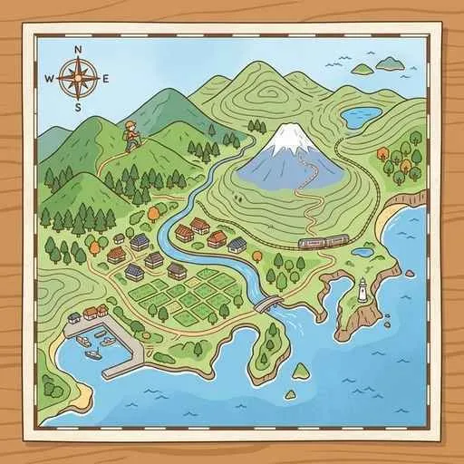
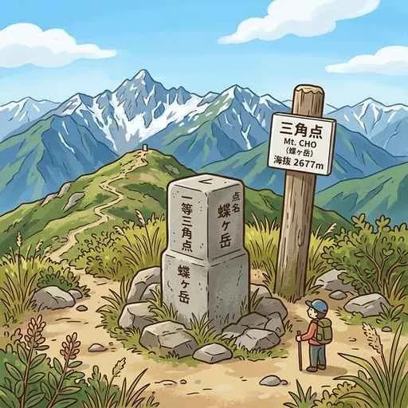
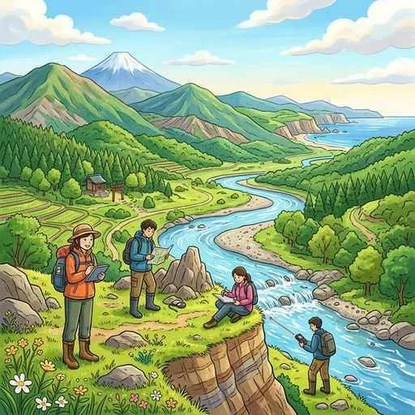

10. 地形図の読み方と野外調査
地理の学習において、実際の土地の様子を縮小して正確に表した「地形図」を読み取るスキルは、テストや入試で必ず出題される超重要項目です。等高線の見方、縮尺による距離の計算、主要な地図記号の覚え方、そして地域を調べる野外調査（フィールドワーク）の手順と統計地図（主題図・ドットマップ）の活用までを網羅して解説します！
1. 地形図の基本ルールと「縮尺」の計算
地形図は、国土地理院が発行する、土地の起伏や高低、道路、建物などの土地利用の状況を詳しく表した地図です。

図1：国土地理院が発行する正確な「地形図」の例
- 方位の原則：地形図上に方位を示す記号（「米」のような方位マークなど）が特にない場合、地図の「上」が「北」を表します。
- 縮尺（しゅくしゃく）：実際の土地の距離を地図上に縮小して表した割合です。中学地理では主に「2万5千分の1」と「5万分の1」の地形図が使われます。
2. 等高線（とうこうせん）と地形の読み取り
海面からの高さが同じ地点を結んだ線のことを「等高線」と呼びます。これを見ることで、大地の傾斜や起伏（尾根と谷など）が分かります。
図2：等高線の間隔が狭い場所は斜面が急で、広い場所は緩やかです
- 傾斜の強弱：等高線の間隔がせまい（密集している）ところは「傾斜が急」であり、間隔が広い（隙間が大きい）ところは「傾斜が緩やか」であることを示します。
- 主曲線（しゅきょくせん）の間隔（超重要！）：高さを示す実線の間隔は、地図の縮尺によって異なります。
- 2万5千分の1の地形図 ➔ 主曲線（細い実線）の間隔は 10メートル ごと
- 5万分の1の地形図 ➔ 主曲線（細い実線）の間隔は 20メートル ごと
3. テストに出る！主要な「地図記号」
地図記号は、建物や土地の利用状況を記号化したものです。テストで非常によく狙われる重要記号を整理しておきましょう。

図3：測量の基準となる「三角点」の地図記号（▲の中に・）
- ◎（二重丸の中に点）：市役所（東京都の区役所）。（※ちなみに、一重丸の中に点は町村役場です）
- 文（「文」の漢字）：小・中学校（または高校）。
- Ⓧ（丸の中に×）：警察署。（※ちなみに、丸のない「×」単体は交番です）
- 三角点（さんかくてん）：緯度・経度を測定する際の基準となる地点。地図記号は三角の中に点（▲の中に・）です。
- 水準点（すいじゅんてん）：標高（高さ）を測るための基準となる地点。主要な国道や県道などの道路沿いに設置されます。
4. 地域を調査する手順と方法
身の回りの地域や課題を調査する学習活動の手順と手法です。

図4：実際に現地を訪れて観察や聞き取りを行う「野外調査（フィールドワーク）」
- 野外調査（フィールドワーク）：実際に調査地へ足を運び、現地の土地利用や建物を観察したり、住民への聞き取り調査（アンケート）を行ったりして調べる方法です。
- 文献調査（ぶんけんちょうさ）：図書館や役所、インターネット等を利用し、本や統計資料、過去の地図などの資料を集めて分析する方法です。現地へ行く前に行うのが基本です。
5. 主題図（しゅだいず）とドットマップ
一般的な地形図（一般図）に対して、目的を持った特別な地図が使われます。
- 主題図（しゅだいず）：気候分布や産業の出荷額、人口密度など、特定のテーマ（主題）に重点をおいて分かりやすく表現した地図です。
- ドットマップ：主題図の一種。統計数値を点（ドット）の多さや密度の違いで表現した地図です。点の集まり具合で、人口の分布や作物の生産分布などを視覚的に読み取るのに最適です。
🔥 定期テスト対策・暗記のコツ
① 縮尺による実際の距離の計算（計算必須！）
「地図上の4cmは、実際の距離で何m（何km）か？」という計算問題の解き方を覚えましょう！
・2万5千分の1の場合：4cm × 25,000 ＝ 100,000cm ➔ 1,000m ➔ 1km
・5万分の1の場合：4cm × 50,000 ＝ 200,000cm ➔ 2,000m ➔ 2km
※「cmのゼロを5つ消すとkmになる（1km ＝ 100,000cm）」と覚えると一発で変換できます！
② 主曲線の間隔の暗記（超重要！）
「2万5千分の1の地形図の等高線の間隔は？」と聞かれたら、「10メートル」、「5万分の1」なら「20メートル」と即答できるように暗記してください。太い線（計曲線）は、それぞれの5倍（50mごと、100mごと）になります。
③ 地図記号の引っかけ問題対策
「市役所＝◎」「小中学校＝文」「警察署＝Ⓧ（交番は×）」「消防署＝（Yのようなマーク）」など、似ている記号（特に警察署と交番の違いなど）はテストで引っかけて出題されやすいです！